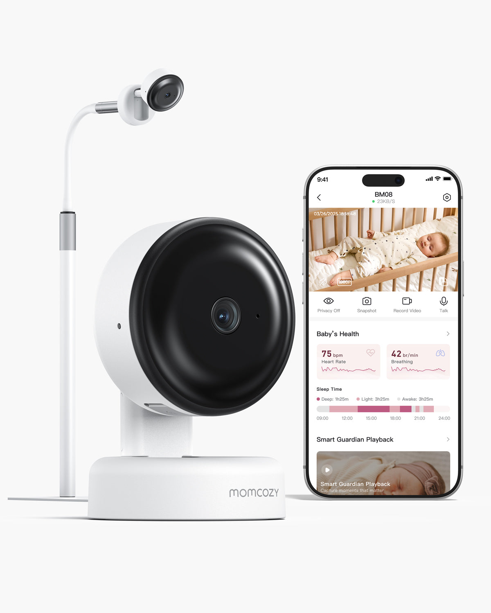

Momcozy 路特创新 × 西安交通大学 · 2027 届校园招聘
在母婴科技赛道，有温度 的事
一个学长的 15 年，一家深圳公司的 9 年，和你们接下来的几年。
张卫卫 工业设计 2007 级 · 路特创新 应用生态体验与研发中心 IoT 产品总监
上台先停两秒，看一圈台下再开口。
各位 2027 届的同学，下午好。我叫张卫卫，现在在路特创新做 IoT 产品总监。
今天回来，我的第一个身份是学长。 我是 2007 级工业设计专业的，2011 年从这里毕业。这是我第一次来咱们这个校区，我毕业那会，这个校区还没建好。十五年后站到这个台上，说实话，比在公司开会紧张。
自我介绍
张卫卫David
学历 西安交通大学 · 工业设计 · 2007 级 经验 15 年软件产品设计经验，近 9 年专注 IoT 智能硬件 过去 曾任职于互联网大厂百度 、全球 PC 龙头联想 、世界 500 强美的集团 、智能清洁头部追觅科技 等企业，历任资深产品经理、产品总监、CPO 等职位 现在 路特创新 应用生态体验与研发中心 IoT 产品总监
今天聊三件事
行业、公司，和你
02
再说路特 一家深圳公司，怎么走进全球 600 万个家庭。
不知道大家还记不记得，自己吃母乳吃到几岁？现场吃到 2 岁以上的，可以举个手。
等三秒，看一眼人数。人多就说「比我想的多」，人少就说「看来我是真的少见」。
过渡：我后来才知道，世界卫生组织的建议是……
母乳喂养 · 建议和现实
按世卫的标准，我妈妈超额完成了
2岁+
世卫组织建议：前 6 个月纯母乳，之后继续喂到 2 岁或更久
WHO 婴幼儿喂养情况说明书
0 %
全球 2 岁时还在吃母乳的孩子；2030 年目标 60%
联合国儿基会 / 世卫组织，2023
29.2%
中国 6 个月内纯母乳喂养率；国家目标 50%
中国发展研究基金会，2019
1/5
高收入国家 1 岁时还在吃母乳的孩子
《柳叶刀》母乳喂养系列，2016
世界卫生组织的建议是：前 6 个月只吃母乳，之后一边加辅食一边继续喂，喂到 2 岁或者更久 。按这个标准，我妈妈是超额完成了。
但全世界大多数妈妈做不到。联合国儿基会和世卫组织 2023 年的全球数据：6 个月以下只吃母乳的婴儿，48%；到 2 岁还在吃母乳的，45% 。
过渡：我挑了几个地方的数据给大家看，差别很大。
各地的妈妈喂到什么时候
同一件事，差别很大
地区 产假制度 孩子 6 个月时 孩子 1 岁时
中国 法定 98 天，各省普遍延长到 158 天及以上 纯母乳 29.2% （农村 28.3%，大城市 35.6%） — 美国 联邦只保障 12 周，无薪 仍在母乳喂养 63% ，纯母乳 30% 仍在母乳喂养 41% 挪威 北欧父母假接近一年（瑞典 480 天） 仍在母乳喂养约 80% 仍在母乳喂养 51% 英国 — 仍在母乳喂养 34% ，纯母乳约 1% 不到 1% ，全球最低之一 德国 — 纯母乳 13% —
“纯母乳”指只吃母乳；“仍在母乳喂养”含混合喂养。中国：中国发展研究基金会 2019；美国：CDC 2023 年出生队列；挪威：Spedkost 2018–19；英国：Infant Feeding Survey 2010、《柳叶刀》2016；德国：Frontiers in Public Health 2025。
先看中国。 中国发展研究基金会 2019 年的全国调查，一万多位妈妈：6 个月内纯母乳喂养率 29.2%，农村 28.3%，大城市反而高一点，35.6%。国家目标是 50%。差这 20 个点，一个很实际的原因是产假 ：法定 98 天，各省延长后普遍 158 天左右，五个月出头。妈妈回去上班时孩子还没满 6 个月。所以中国有个专门的词：背奶妈妈 。上班把奶吸出来，冷藏，晚上背回家。
再看美国。 86% 一出生吃过母乳，6 个月还在吃的 63%，1 岁 41%；纯母乳到 6 个月的 30%。产假比我们还短：联邦只保障 12 周，无薪；孩子不满 1 岁的妈妈六成在上班。
欧洲两个极端。 北欧父母假近一年，瑞典 480 天；挪威 6 个月八成还在吃，1 岁一半。英国 6 个月只有三分之一，1 岁不到 1%，全球最低之一。德国在中间，6 个月纯母乳 13%。
《柳叶刀》2016 · 一个规律
越发达的地方，妈妈喂得越短
把这些数放在一起，有一个规律。《柳叶刀》2016 年的全球研究：中低收入国家，大多数孩子吃到 1 岁以上；高收入国家，1 岁还在吃的只有五分之一 。越是经济发达、妈妈越要出去工作的地方，母乳喂养时间越短。
我们这一代，很多人像我一样吃到两三岁，是因为我们的妈妈大多在家。今天的妈妈，想喂，也想回去工作，还想做自己。时间，是她们最缺的东西。
各国都在想办法
法律能管的，各国都在管
泵奶的时间
美国 PUMP 法案 · 2022
哺乳的场地
中国母乳喂养促进行动计划 · 2021–2025
买吸奶器的钱
美国平价医疗法案 · 医保覆盖吸奶器
各国都在想办法。美国 2022 年通过 PUMP 法案 ，雇主要给妈妈留出泵奶时间，和一个不在卫生间里的房间；平价医疗法案 要求大部分商业保险免费提供吸奶器。中国的母乳喂养促进行动计划 ，要求用人单位配母婴设施、保障哺乳时间。
法律管时间、房间和机器的钱，剩下的事要靠产品 ：怎么让吸奶这件事，不再把妈妈钉在一个地方。
过渡：穿戴式吸奶器就是冲着这个来的。下一页放 Air 1 的片子，1 分钟。
Momcozy Air 1 · 2025
穿戴式吸奶器：放进内衣，不插电、不用手扶 视频文件未找到 请把视频放到 media/6UqI-ek7EGQ.mp4
Meet the Momcozy Air 1 Ultra-Slim Wearable Breast Pump · youtube.com/watch?v=6UqI-ek7EGQ
市场数字 · 听个量级
这不是一个小生意
0 %
全球吸奶器市场每年增长 8% 左右
Grand View Research 等四家机构，2026
6.5→12 亿
穿戴式吸奶器：2025 年约 6.5 亿美元，预计 2033 年接近 12 亿美元
Grand View Research，2026
0 %
女性健康科技整体每年增长 15% 左右
Grand View Research / GMI，2026
1万亿美元
把女性健康上的差距补上，到 2040 年每年给全球经济多带来至少这么多
麦肯锡健康研究院 × 世界经济论坛，2024
市场数字只念量级，语速放慢。
我只说三个：全球吸奶器市场每年增长 8% 左右 ；穿戴式这个品类 2025 年大约 6.5 亿美元 ，预计 2033 年接近 12 亿；女性健康科技整体每年增长 15% 左右 。麦肯锡和世界经济论坛还算过一笔账：把女性健康上的差距补上，到 2040 年每年能给全球经济多带来至少 1 万亿美元 。
过渡：讲这些，是想分享三个判断。
我的三个判断
为什么现在值得进来
判断一
这是刚需，各国政府都在往里投
判断二
这个行业正在变成科技行业
判断三
中国团队有机会
第一，这是刚需，而且各国政府都在往里投。 妈妈对时间的需要不会消失，法律和医保正在把它变成制度。
第二，这个行业正在变成科技行业。 一台穿戴式吸奶器里有电机、气路、传感器、电池管理，还要连 App、记数据。今年科隆母婴展的主题就叫“和 AI 一起成长”，YouGov 的调查里一半德国父母愿意在母婴产品里用 AI，最担心的是安全和隐私。这个行业需要会做硬件、会写算法、也守得住用户隐私的人。
第三，中国团队有机会。 2025 年跨境电商进出口超过 2.7 万亿元，自主品牌出口增长 12.9%。我们离供应链近，工程迭代快。
收：如果有同学觉得母婴是个太细分的赛道，我的回答是，它服务的是每个家庭最累的那一两年，这件事在每个国家、每一年都在发生。
02
再说路特
一家深圳公司，怎么走进全球 600 万个家庭
Momcozy 品牌日 · 2026-09
Mom, and More 视频文件未找到 请把视频放到 media/-eixgSEAjnA.mp4
Momcozy Mom and More | Motherhood Expands Who You Are · youtube.com/watch?v=-eixgSEAjnA
视频 1:00，自动播放。三位主角都是两个孩子的妈妈，片子讲的是：成为妈妈，不等于只成为一种身份。
Allyson Felix ：美国短跑运动员，拿过 11 枚奥运奖牌 ，是美国田径史上奖牌最多的运动员之一。退役后创办了运动鞋品牌 Saysh 和运动员经纪公司 Always Alpha，一直在推动体育界给怀孕、生育的女运动员更好的保障。
Kellie Gerardi ：研究宇航员、科普作者，最早进入太空的 100 位女性之一 ，在太空做过科学实验，正在准备下一次研究飞行。她还写了一套给孩子的太空绘本《Luna Muna》。
Reshma Saujani ：公益组织 Girls Who Code 的创始人，专门教女孩学编程；现在是 Moms First 的 CEO，推动平价托育、带薪产假和女性经济独立。
一句话收：奥运冠军、宇航员、科技公益创始人，当了妈妈以后，还是她们自己。
路特创新 · 2017 – 2026
一家深圳公司，用七年做到品类第一
2018
Momcozy 品牌创立，首批产品有电动吸奶器和免手扶吸奶文胸
2024
穿戴式吸奶器全球份额第一，约 19%（Grand View Research）
2025
Air 1 入选《时代》年度最佳发明特别提及
2026
服务全球 600 万+ 妈妈和家庭，覆盖 80+ 国家和地区
份额口径：2024 年穿戴式吸奶器品类，线上加线下；北美 22.21%、欧洲 20.2%，均为第一。
路特 2017 年在深圳成立，2018 年创立 Momcozy 。到今年 6 月，全球超过 600 万的妈妈和家庭用过我们的产品，业务覆盖 80 多个国家和地区。
有一个数字我们自己很看重：按 Grand View Research 的统计，2024 年 Momcozy 是全球穿戴式吸奶器市场份额第一的品牌 ，全球约 19%，北美和欧洲也都是第一。一家深圳公司从成立到走到这个位置，用了七年。
过渡：数字之外，我想讲两件我在路特看到的事。
第一件事 · 产品怎么来的
先看妈妈哪里不方便，再决定做什么
2018 1
盯住背奶妈妈 产假结束回到职场，一天要吸好几次奶；传统吸奶器要求固定的地方、固定的时间。
2018 2
先把手空出来 最早的产品之一是免手扶吸奶文胸，把吸乳罩固定住。
2022 3
把机器放进内衣 S10 穿戴式吸奶器拿下红点设计奖。
2025 4
更薄，还能看数据 Air 1 在 App 上实时显示吸了多少奶，入选《时代》年度最佳发明特别提及。
“安静、小巧，能让女性在职场里不被察觉地吸奶。”红点设计奖评委对 Momcozy S10 的评语，2022 · 品牌信条：Always Put Moms First
第一件，是产品怎么来的。 2018 年品牌刚起步，团队盯住的是一群“背奶妈妈”：产假结束回到职场，上班一天要吸好几次奶，传统吸奶器要求她们坐在固定的地方、固定的时间。所以 Momcozy 最早的产品里，就有一件免手扶的吸奶文胸 ，先把妈妈的手空出来；再往后，干脆把整台机器做小、做轻，直接放进内衣里。
2022 年，S10 拿了红点奖。评委只写了一句话：它安静、小巧，能让女性在职场里不被察觉地吸奶 。学工业设计的同学应该能体会，评委夸的是场景：职场。从那以后又迭代了好几代，2025 年的 Air 1 更薄，还能在 App 上实时看到吸了多少奶，入选了《时代》2025 年度最佳发明特别提及。
品牌信条叫 Always Put Moms First，大白话就是：先看妈妈哪里不方便，再决定做什么。
第二件事 · 公司怎么用技术把照顾这件事做轻
从怀孕到宝宝两三岁，六类产品
孕期与产后恢复 Ergonest 托腹带 · 科隆母婴展创新奖 2025 喂养 吸奶器、暖奶器、储奶 睡眠与监测 白噪音机、婴儿监视器 日常护理 哺乳内衣、护理用品 出行 背带、推车 家居环境 空气净化器、加湿器
第二件，是公司怎么用技术把照顾这件事做轻。 很多人以为 Momcozy 只做吸奶器。其实从怀孕到宝宝两三岁，一个家庭要用到的东西我们大多在做：孕期和产后恢复、喂养、睡眠与监测、日常护理、出行、家居环境，一共六类 。托腹带拿了去年科隆母婴展的创新奖，背带、推车、空气净化器、加湿器也都有。
品类很多，做法是一样的：找到爸妈最累的那个动作，用技术把它拿掉。
过渡：我举一个今年的例子。
今年的一个例子 · BM08 婴儿监视器
半夜醒来，先看孩子还有没有在呼吸
1 毫米波雷达，隔着被子感知呼吸起伏 宝宝身上什么都不用戴。过去要穿戴传感器，要充电，一踢就没了。
2 2K 摄像头 + AI 宝宝哭了、口鼻被捂住了，手机上会提醒。
3 它解决的不是“看得见”，是让爸妈敢睡觉 2026 年 5 月发布。

当了爸妈的人都有一个动作：半夜醒来，先去看一眼孩子还有没有在呼吸 。过去的办法是让宝宝穿戴一个传感器，要充电，宝宝一踢就没了。
今年 5 月我们发布的 BM08 婴儿监视器，用的是毫米波雷达 ：隔着被子感知宝宝的呼吸起伏，宝宝身上什么都不用戴；再加一颗 2K 摄像头和 AI，宝宝哭了、口鼻被捂住了，手机上会提醒。它解决的不是“看得见”，是让爸妈敢睡觉 。
“
技术不是用来炫的，
这就是这家公司对技术的看法：技术不是用来炫的，是用来把时间和睡眠还给爸妈的。 用一句中文说：成为妈妈，也不必放弃成为自己。
回扣开头：我妈妈那一代人喂到五岁，是把自己整个人都给了孩子。今天的妈妈想喂，也想上班，也想做自己。我们做的每一件产品，都是在替她们把时间抢回来一点。
我在路特做什么 · IoT
让设备连上同一个 App，再用 AI 帮妈妈省时间
穿戴式吸奶器 Air 1 · M5 Smart · W1
→
Momcozy App 吸了多少奶、宝宝睡得怎么样，都记在一个地方
→
语气放松一点，从公司切到自己。
我在路特负责 IoT 产品。简单说，就是让吸奶器、婴儿监视器、体温计、白噪音机这些设备连上同一个 Momcozy App ，把妈妈吸了多少奶、宝宝睡得怎么样记下来，再用 AI 给每位妈妈排一个适合她的吸奶计划 。刚才说的 BM08，也是接进这个 App 的。
以前在美的，我做的是让空调、冰箱连上网；现在设备换了，屏幕那头换成了一位刚当妈妈的人 。她可能凌晨还在吸奶，产品慢一秒、错一步，她都感觉得到。这是我来路特以后感受最深的一点。
大三暑假，腾讯，两个实习生，两位导师
他的导师
一位做执行的设计师
帮他想项目 帮他做组内分享的 PPT 手把手告诉他每一步怎么做 vs
我的导师
整个设计组的组长
太忙，每天见不到人 头几天不知道该做什么，后面越来越虚 自己给 Mac 版 QQ 音乐做了一套方案，一个星期，被批“全是一坨屎”，让重做，不说为什么
我大三暑假在腾讯实习。跟我一起进去的还有另一个实习生。腾讯也有导师制，我们俩各分了一位导师：他的导师是一位做执行的设计师，我的导师是整个设计组的组长。
我当时特别羡慕他。他的导师把能教的全教给他：帮他想项目，帮他做组内分享的 PPT，手把手告诉他每一步怎么做。我的导师呢，太忙了，每天见不到人。头几天我根本不知道自己该做什么，无所事事；后面越来越虚，因为实习只有两个月，结束就要决定能不能留下。
我只能不停地做竞品分析。当时组里在做 Mac 版的 QQ 音乐，我就自己给 QQ 音乐做了一套全新的方案，没有任何人告诉我方向是什么。花了一个星期，把主流程全部梳理完，设计做好，发给导师。导师狠狠批了我一顿，说全是一坨屎，让我重做，也不告诉我为什么。后来，我没有留在腾讯，那个同学留下了。
第一件
有人带你，而且带你的人大概率不是你的领导
01 一对一帮带 刚进一个全新的环境，没有安全感。有人告诉你：这里你能做什么，先做什么，后做什么。
02 导师大概率不是你的领导 你问多蠢的问题，都不用担心影响考核。
03 至少不会像我当年那样 无所事事几天，再被批一顿，还不知道为什么。
我想说的是：一个刚毕业的人进到一个全新的环境，是非常没有安全感的。 他需要有人告诉他，这里你能做什么，先做什么，后做什么。
路特有一对一的帮带 ，而且你的导师大概率不是你的领导。这一点很重要：你问多蠢的问题，都不用担心影响考核。至少，你不会经历我刚毕业时经历的那个样子。
第二件
我们在开荒：在一个蓝海市场，定义一个新品类
开荒阶段
流程、标准、方法，很多都还没有
蓝海市场
没有现成答案可抄，也没有谁规定该怎么做
定义新品类
你参与决定的，是这个品类长什么样
2027 届开放方向 产品 算法 数据分析 UI 设计 采购开发 海外销售与渠道运营 企业文化
第二件，你来了会经历的，是开荒。 我们团队现在处在开荒阶段：在一个蓝海市场里，定义一个新的品类。没有前人的路，流程、标准、方法很多都还没有；没有现成答案可抄，也没有谁规定该怎么做。【一句话说这个品类是什么、为什么是蓝海】
这意味着：你来的时候，很多规矩还没写，有些会是你写的；你参与决定的，是这个品类长什么样。从第一天起你就在主导一件事，而不是维护一件事，这是学得最快的阶段。说实话，流程没有大厂那么完善，很多问题要自己先定义清楚再做。今年校招开放了产品、算法、数据分析、UI 设计、采购开发、海外销售和渠道运营这些方向。
“
想要稳定流程和大厂光环的同学，自己能完整说清楚的产品 ，
“
能把用户的问题想清楚、在哪里都缺。
作为学长，我再多说一句。咱们学校的同学工程底子扎实 ，这是很大的优势。我这些年最大的体会是：能把用户的问题想清楚、再把它翻译成工程问题的人，在哪里都缺。母婴这个行业，特别需要这样的人。【可补一句给工业设计、电信、计算机等专业同学的话】
路特创新 · 2027 届校园招聘
饮水思源
选一个你愿意长期投入、做出来能让别人过得好一点的方向，会走得更踏实。
在线测评 → 简历筛选 → 一面 / 笔试 → 二面 → HR 面 → 签约
投递入口：公众号 「ROOT路特」 · 明年这个时候，深圳见。
扫码关注「ROOT路特」
放慢语速。
十五年前，我和大家一样，在这个校园里想自己以后要做什么。交大有句话，叫饮水思源 。今天回来，一半是来招人，一半是想跟学弟学妹们说：毕业以后的路很长，选一个你愿意长期投入、做出来能让别人过得好一点的方向，会走得更踏实。
路特 2027 届校招已经开始了。流程是在线测评、简历筛选、两轮面试和 HR 面试，投递入口是公众号「ROOT路特」【以 HR 现场物料为准】 。希望明年这个时候，能在深圳见到你们。
谢谢大家
Q & A · 路特创新 · 公众号「ROOT路特」
备用 · Momcozy 品牌日 2025-09
Cozy by You：和妈妈、专家、工程师、设计师一起做 视频文件未找到 请把视频放到 media/MC3VQFCdEM4.mp4
Cozy by You | With Moms, For Moms · youtube.com/watch?v=MC3VQFCdEM4